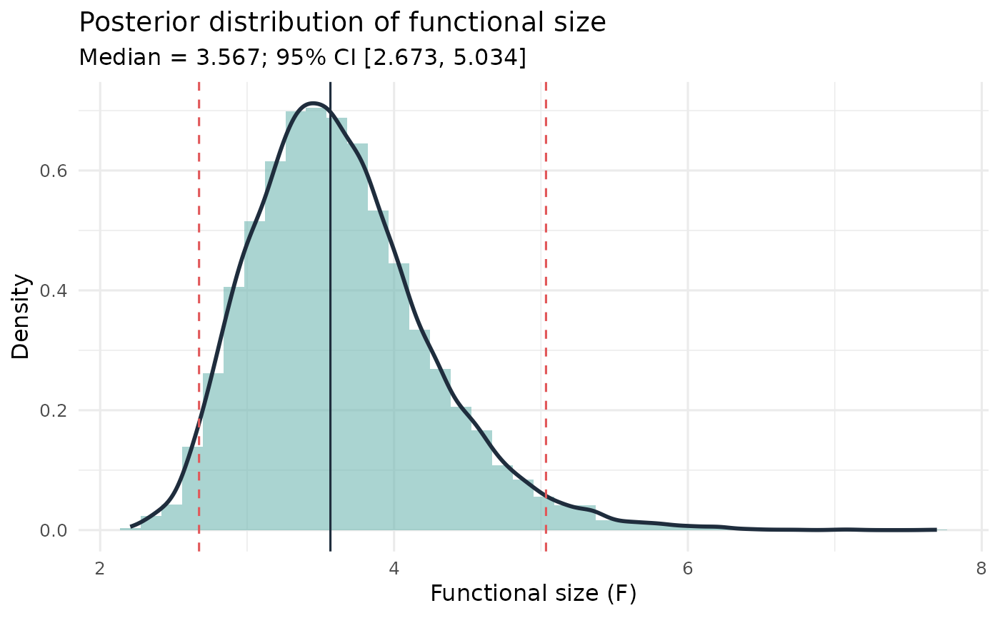

Computes a Bayesian posterior distribution for the functional size of a lineup using a Beta-Binomial conjugate model for the suspect-selection rate.
Usage
func_size_bayes(
lineup_vec,
target_pos,
alpha = 0.5,
S = 10000,
credible_mass = 0.95,
threshold = NULL
)Arguments
- lineup_vec
A numeric vector of lineup choices.
- target_pos
A scalar; the position of the suspect in the lineup.
- alpha
Dirichlet concentration (prior strength). A positive scalar. Named shortcuts:
"jeffreys"(0.5, default),"uniform"(1),"weak"(0.1).- S
Number of posterior draws. Default 10000.
- credible_mass
Width of the equal-tailed credible interval. Default 0.95.
- threshold
Optional numeric. If supplied, reports \(P(F < t)\) and \(P(F > t \mid \mathbf{n})\).
Value
An object of class "func_size_bayes" containing:
- F_draws
Numeric vector of length
S: posterior draws of functional size.- posterior_mean, posterior_median
Posterior point estimates.
- credible_interval
Named two-element vector (lower, upper).
- prior_alpha, n, n_suspect, S, credible_mass
Input metadata.
- threshold, threshold_probs
Threshold and probabilities (or NULL).
Details
Functional size \(F = N / n_s\) is the reciprocal of the suspect-selection rate \(p = n_s / N\). The Beta-Binomial conjugate model gives: $$p \mid \mathbf{n} \sim \mathrm{Beta}(n_s + \alpha,\; N - n_s + \alpha)$$ Posterior draws of \(p^{(s)}\) are transformed via \(F^{(s)} = 1/p^{(s)}\). The default Jeffreys prior (\(\alpha = 0.5\)) is recommended. The posterior gives direct probability statements such as \(P(F < k \mid \mathbf{n})\), where \(k\) is the nominal lineup size.
References
Tredoux, C. G. (1998). Statistical inference on measures of lineup fairness. Law and Human Behavior, 22(2), 217-237.
Examples
set.seed(1)
lineup_vec <- round(runif(100, 1, 6))
res <- func_size_bayes(lineup_vec, target_pos = 3)
print(res)
#> Bayesian Functional Size - Beta-Binomial model
#> Prior: Jeffreys-type Beta(0.50, 0.50)
#> n = 100, suspect IDs = 28 (rate = 0.280)
#> Posterior mean F: 3.637
#> Posterior median F: 3.567
#> 95% credible interval: [2.673, 5.034]
plot(res)

# Threshold: P(F < 6 | data)
res_t <- func_size_bayes(lineup_vec, target_pos = 3, threshold = 6)
print(res_t)
#> Bayesian Functional Size - Beta-Binomial model
#> Prior: Jeffreys-type Beta(0.50, 0.50)
#> n = 100, suspect IDs = 28 (rate = 0.280)
#> Posterior mean F: 3.637
#> Posterior median F: 3.563
#> 95% credible interval: [2.668, 5.005]
#> P(F < 6.000 | data): 0.9983
#> P(F > 6.000 | data): 0.0017